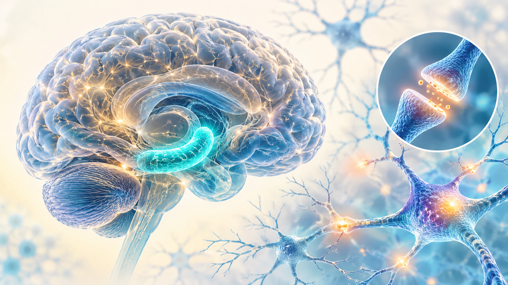

Plasticité synaptique
Modification de l’efficacité de la transmission entre deux neurones.
NEUROSCIENCES · APPRENTISSAGE · SANTÉ
La neuroplasticité désigne la capacité du système nerveux à modifier son organisation et son fonctionnement en réponse à l’expérience, à l’apprentissage ou à une lésion.

01 — LES BASES
Le cerveau n’est pas une structure figée. Ses réseaux neuronaux peuvent se réorganiser tout au long de la vie.
Chaque expérience mobilise des circuits neuronaux. Avec l’apprentissage, certaines connexions deviennent plus efficaces, d’autres s’affaiblissent, et de nouvelles ramifications peuvent apparaître. Ces changements contribuent à l’acquisition des connaissances, à la mémoire et à l’adaptation du comportement.
La plasticité n’est toutefois pas toujours bénéfique : certaines réorganisations peuvent participer à la douleur chronique, à l’épilepsie ou à des comportements pathologiques. Elle dépend du contexte, de l’âge, de l’activité neuronale et de l’état biologique du cerveau.
Modification de l’efficacité de la transmission entre deux neurones.
Modification des épines dendritiques, des ramifications et de l’organisation des réseaux.
Réorganisation de l’activité des réseaux, notamment lors de l’apprentissage ou de la rééducation.
02 — LES STRUCTURES
L’hippocampe, situé dans la partie médiale du lobe temporal, participe à la formation de nouveaux souvenirs déclaratifs et à la mémoire spatiale.

Les informations provenant notamment du cortex entorhinal atteignent le gyrus denté, puis les régions CA3 et CA1 de l’hippocampe. Ce circuit trisynaptique est un modèle pédagogique important pour comprendre certains phénomènes de plasticité.
Ce schéma simplifie une organisation anatomique plus complexe : l’hippocampe reçoit et échange des informations avec de nombreuses régions du cerveau.
Les dendrites reçoivent des signaux, le corps cellulaire les intègre et l’axone conduit un potentiel d’action vers d’autres cellules.
03 — À L’ÉCHELLE CELLULAIRE
La potentialisation à long terme (PLT ou LTP) est une augmentation durable de l’efficacité synaptique après certains motifs d’activité. Elle est particulièrement étudiée dans l’hippocampe.

Un potentiel d’action atteint la terminaison présynaptique. L’entrée de calcium dans cette terminaison déclenche la fusion de vésicules et la libération de glutamate dans la fente synaptique.
Le glutamate se fixe aux récepteurs AMPA postsynaptiques. Des ions positifs, surtout Na⁺, entrent dans la cellule et provoquent une dépolarisation de la membrane.
Au repos, le canal NMDA est obstrué par Mg²⁺. La dépolarisation chasse en partie ce magnésium. Si le glutamate est présent, le canal NMDA peut alors laisser entrer du Ca²⁺ (et aussi du Na⁺).
Le Ca²⁺ se lie notamment à la calmoduline et active des enzymes comme CaMKII et certaines isoformes de PKC. Ces voies modifient des protéines synaptiques et favorisent l’efficacité de la transmission.
Les récepteurs AMPA peuvent être phosphorylés et davantage insérés dans la membrane postsynaptique. Pour une même quantité de glutamate, la réponse postsynaptique devient alors plus importante.
Elle repose surtout sur des modifications de protéines déjà présentes, la phosphorylation et le trafic des récepteurs AMPA. Elle peut durer de minutes à quelques heures selon le protocole et le circuit étudié.
Une activation plus soutenue peut engager des voies comme PKA, MAPK/ERK et le facteur de transcription CREB. L’expression de gènes et la synthèse de nouvelles protéines contribuent à des changements synaptiques plus durables.
Des protéines, dont BDNF dans certains contextes, participent à la stabilisation des modifications. La forme et la taille des épines dendritiques peuvent évoluer.
Une augmentation durable de l’efficacité synaptique. Elle dépend du type de synapse, du motif d’activité et des voies moléculaires engagées.
Une diminution durable de l’efficacité synaptique. Dans plusieurs modèles, des signaux calciques différents activent notamment des phosphatases et favorisent le retrait de récepteurs AMPA.
La PLT et la LTD ne sont pas de simples boutons « mémoire activée/désactivée ». Elles contribuent à ajuster les réseaux neuronaux. Les mécanismes varient selon les régions, les synapses et les conditions expérimentales.
04 — APPRENTISSAGE & MÉMOIRE
Apprendre ne consiste pas à enregistrer passivement une information. Le cerveau l’encode, la relie aux connaissances existantes, puis la stabilise progressivement. L’hippocampe joue un rôle important dans la formation de nouveaux souvenirs déclaratifs, tandis que leur consolidation à long terme implique des interactions avec le néocortex.
Le sommeil, la répétition espacée, la récupération active de l’information et le sens donné à ce que l’on apprend peuvent soutenir la mémorisation. Ils ne garantissent toutefois pas à eux seuls une protection contre une maladie neurologique.
05 — QUAND LA PLASTICITÉ EST PERTURBÉE
La plasticité peut être altérée, insuffisante ou parfois maladaptative. Les maladies présentées ci-dessous ont des mécanismes multiples : elles ne sont pas toutes causées par un simple défaut de LTP.
Les pathologies amyloïde et tau, les dysfonctionnements synaptiques et la perte neuronale perturbent progressivement les réseaux de mémoire, souvent avec une atteinte précoce des structures temporales médiales.
Dans certains épisodes dépressifs, le stress chronique et des facteurs biologiques sont associés à des modifications de la plasticité et de la signalisation neurotrophique. Ces mécanismes ne sont ni identiques chez tous les patients ni suffisants pour expliquer seuls la maladie.
Dans certaines formes, notamment avec sclérose hippocampique, la perte neuronale et la réorganisation des circuits peuvent contribuer à des réseaux hyperexcitables. Certaines formes de plasticité deviennent alors maladaptatives.
Après un AVC, les régions intactes et les réseaux résiduels peuvent se réorganiser. La rééducation répétée, progressive et orientée vers des tâches utiles cherche à favoriser des adaptations fonctionnelles.
06 — DE LA SCIENCE AUX SOINS
La prise en charge dépend de la maladie, de sa cause, de sa sévérité et de la situation de chaque patient. Il n’existe pas de traitement universel qui « réactive » la neuroplasticité.
| Situation | Interventions reconnues | Ce qu’elles visent |
|---|---|---|
| Après un AVC | Rééducation motrice, orthophonie, ergothérapie et entraînement fonctionnel adaptés. | Améliorer les capacités et l’autonomie en mobilisant les réseaux préservés. |
| Alzheimer | Accompagnement, stimulation adaptée, prise en charge des facteurs associés et traitements médicamenteux selon le stade et l’éligibilité. | Soutenir les fonctions, la qualité de vie et, pour certains traitements ciblés, ralentir modestement le déclin chez des patients sélectionnés. |
| Dépression | Psychothérapies, antidépresseurs selon indication, et parfois rTMS ou électroconvulsivothérapie dans des situations précises. | Traiter le trouble et améliorer le fonctionnement des réseaux impliqués dans l’humeur. |
| Épilepsie | Traitements antiépileptiques ; bilan spécialisé et options chirurgicales ou de neuromodulation pour certains cas résistants. | Réduire les crises et contrôler l’activité neuronale anormale. |
Un entraînement adapté, progressif et répété est central dans de nombreuses rééducations neurologiques.
Ils contribuent à la santé générale et aux fonctions cognitives. Ils complètent les soins mais ne remplacent pas un traitement médical.
Des techniques comme la stimulation cérébrale et les approches personnalisées sont étudiées pour des indications précises.
Information médicale : ce site est un support pédagogique. Il ne pose pas de diagnostic et ne remplace pas une consultation. Aucun médicament, complément ou protocole de stimulation ne doit être commencé ou modifié sans avis d’un professionnel de santé.
07 — POUR APPROFONDIR
Des travaux fondateurs et des synthèses utiles pour poursuivre la lecture. Les liens mènent aux notices ou articles scientifiques.
Long-lasting potentiation of synaptic transmission in the dentate area of the anaesthetized rabbit following stimulation of the perforant path. Journal of Physiology, 232, 331–356.
Consulter l’article ↗LTP and LTD: an embarrassment of riches. Neuron, 44(1), 5–21.
Consulter l’article ↗Synaptic plasticity: multiple forms, functions, and mechanisms. Neuropsychopharmacology, 33, 18–41.
Consulter l’article ↗Mechanisms of CaMKII action in long-term potentiation. Nature Reviews Neuroscience, 13, 169–182.
Consulter l’article ↗Neuroinflammation in Alzheimer's disease. The Lancet Neurology, 14(4), 388–405.
Consulter l’article ↗